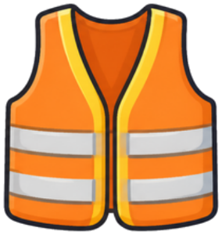
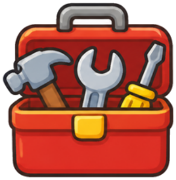

🔐 5번 방 · 직접 만들고 개선하기22차시 / 20~24도입

물건 교과서 · 방 탈출 미션
5번 방 · 22차시
나만의
놀잇감 제작소
설계도를 보며 차근차근 만들어요.
지난 미션 돌아보기
설계도를 펼쳐요
만들기 전에 설계를 하면
재료와 구조를 미리 생각할 수 있어요.
재료와 구조를 미리 생각할 수 있어요.
📐 설계도의 ‘꼭 지킬 점’에 손가락을 올려 봐요!

🚨 마법사가 재료를 노려요!

MISSION BRIEFING
오늘의 미션 세 가지
미션 1

안전 약속 OX
몸으로 O · X
미션 2

차근차근 만들기
화면 길잡이를 따라요
미션 3
첫 시험
굴려 보고 소리 내 보고
보상
열쇠 조각 3
5번 방 세 번째!
🎯 학습 목표 설계도를 보며 주변 물건과 재활용품으로 놀잇감을 직접 만들 수 있어요.
NEXT MISSION
23차시 예고
실패해도 괜찮아,
실패해도 괜찮아,
다시 도전!
시험하고, 고치고, 다시 시험해요.
🚗 오늘 만든 놀잇감
📒 제작 일지